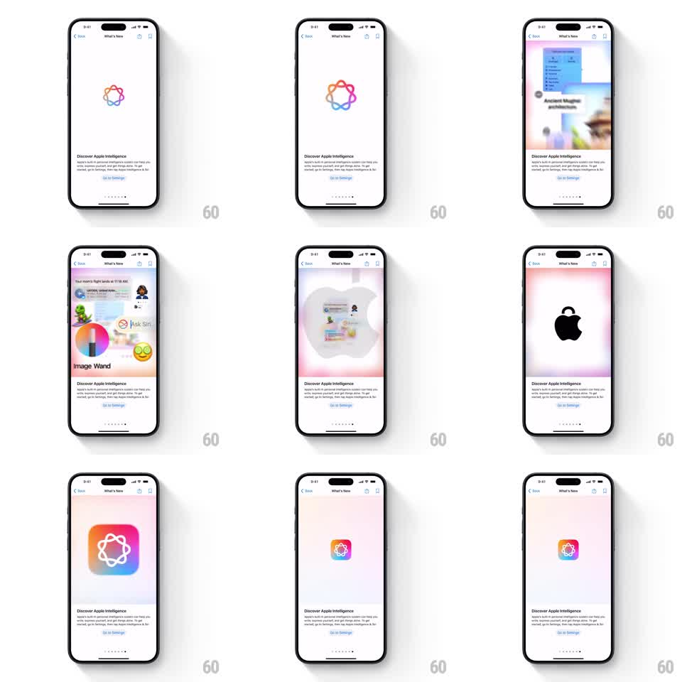

Media
Frame-by-frame

Rebuild this animation 1:1: Apple's Tips "Discover Apple Intelligence" page - the rainbow Apple Intelligence loop glows and morphs into floating feature previews (notification summaries, Image Wand), then resolves into the Apple logo and the Settings app icon.

Rebuild this animation 1:1: Apple's Tips "Discover Apple Intelligence" page - the rainbow Apple Intelligence loop glows and morphs into floating feature previews (notification summaries, Image Wand), then resolves into the Apple logo and the Settings app icon.
## Integration
Integration: stack-agnostic spec - springs given as stiffness/damping, timed motions as duration + curve; map every value to your framework and animation library of choice.
## Scene
A white Tips detail page: nav bar ("What's New"), the Apple Intelligence mark (a rainbow infinity-loop of intertwined strokes) centered, "Discover Apple Intelligence" with explainer copy and a "Go to Settings" link below. The hero area cycles through feature vignettes: stacked notification summaries ("Ancient Magus Bride"), a photo editing sheet with Image Wand and Ask Siri, a glowing Apple silhouette, and the rainbow Intelligence app icon.
## Motion spec
Pattern: morphing hero showcase, ~8s cycle.
- The rainbow loop draws itself stroke by stroke (900ms, ease-in-out), then idles with a slow hue drift and a soft outer glow (3s loop).
- The loop expands and dissolves into the first vignette (500ms): notification cards stack in with a slight stagger, a glass sheet rising over a blurred photo.
- Each vignette holds 1.5s, then morphs to the next (500ms crossfade with a shared-element feel, UI elements sliding rather than hard-cutting).
- The glow coalesces into the black Apple logo on a radiant pink-white field (500ms), then shrinks into the rounded Intelligence app icon (spring stiffness 320 damping 20), which settles above the copy.
- Page dots advance with each stage.
## Calibration
- Every transition keeps one element continuous (the glow, the icon silhouette) so the stages feel like one object changing.
- The rainbow gradient stays saturated - pastel washes are a miss.
## Reduced motion
Stages crossfade without morphing.
## Don't miss
- The loop mark is drawn as overlapping translucent strokes, not a flat gradient ring.
- The vignette UI floats over a soft radial glow that matches the loop's colors.